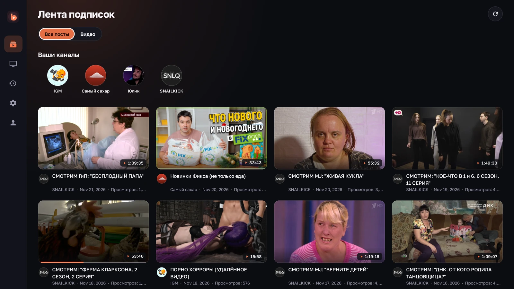
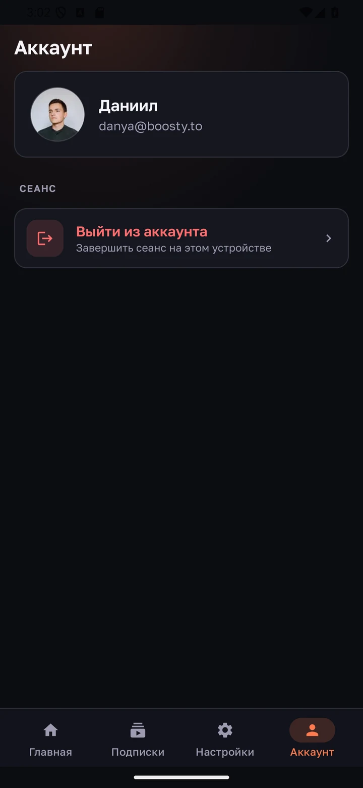

Boosty на телевизоре и телефоне
Неофициальный нативный клиент для Android TV, смартфонов и планшетов. Подписки, видео в Media3 с выбором качества, комментарии и быстрый вход на ТВ по QR-коду с телефона.
- Версия
- v2.5.0
- Размер APK
- 3,2 МБ
- Система
- Android 8+ и Android TV
- Лицензия
- MIT, открытый код

Один APK для ТВ и смартфона
На телевизоре открывается широкоформатная сетка с боковым меню и фокусом под крестовину пульта. На телефоне работают вертикальная лента, нижняя навигация и сканер QR-кода для авторизации телевизора.



Как устроен клиент
В версии 2.0 интерфейс полностью переписан на Jetpack Compose. Вместо WebView здесь нативный список, кэш обложек и аппаратное декодирование видео.
-
Плеер Media3, кастомный HUD и скачивание видео
Встроенный ExoPlayer с боковой панелью настроек поверх видео: переключение разрешения от 360p до 4K, скорость воспроизведения, быстрая перемотка и сохранение видео в память устройства с выбором качества. При желании ролик можно открыть во внешнем плеере.
-
Навигация с пульта Android TV
Сворачиваемый Navigation Rail слева, явный фокус карточек и подсветка фона в тон выбранной обложке. Кнопка «Назад» на пульте предсказуемо возвращает из поста в ленту и из разделов на главную.
-
Вход на телевизор по QR-коду
Не нужно вводить номер телефона и коды с экранной клавиатуры. Телевизор показывает QR-код, телефон с установленным Boosty ATV сканирует его и передаёт сеанс напрямую по локальной сети.
-
Каналы, поиск и фильтрация по тегам
Полка подписок прямо на главной, отдельный каталог каналов, текстовый поиск внутри блога автора и фильтр по тегам публикаций.
-
История просмотров и таймкоды
Прогресс воспроизведения сохраняется локально и синхронизируется с Boosty, так что длинные выпуски открываются с того места, где вы остановились.
-
Комментарии, реакции и уведомления
Чтение и написание комментариев с ответами в ветках, реакции на посты, закладки «Смотреть позже», фоновые уведомления о новых видео и проверка обновлений напрямую через GitHub Releases.
Установка
Приложение распространяется одним универсальным APK для смартфонов, планшетов и приставок Android TV.
-
Установите APK на устройство.
На Android TV файл удобно передать через флешку, локальную сеть (Send Files to TV) или
adb install BoostyATV.apk. - Войдите в аккаунт Boosty. На смартфоне доступен вход по номеру телефона или через веб-сессию Boosty.
- Подключите телевизор за 10 секунд. Откройте на смартфоне «Настройки → Подключить ТВ» и наведите камеру на QR-код на экране телевизора.
Частые вопросы
Это официальное приложение Boosty?
Нет. Это независимый open-source клиент для удобного просмотра подписок на Android TV и Android. Проект не связан с командой Boosty.
Куда отправляются данные аккаунта и токены?
Только напрямую на официальные серверы Boosty. У приложения нет собственного бэкенда, аналитики или рекламы. При передаче сеанса на телевизор по QR-коду обмен идёт внутри вашей домашней Wi-Fi сети. Весь код открыт на GitHub.
Можно ли открыть видео во внешнем плеере вроде VLC или Nova?
Да. В разделе «Настройки → Плеер» можно переключиться со встроенного Media3 на любой внешний плеер, установленный в системе.
Как обновлять приложение после установки?
В настройках есть пункт «Проверить обновления». При выходе новой версии на GitHub Releases приложение покажет список изменений и предложит скачать и установить свежий APK.